정육쇼케이스
정육숙성고 창업, 설비 계획 짤 때 먼저 정할 네 가지
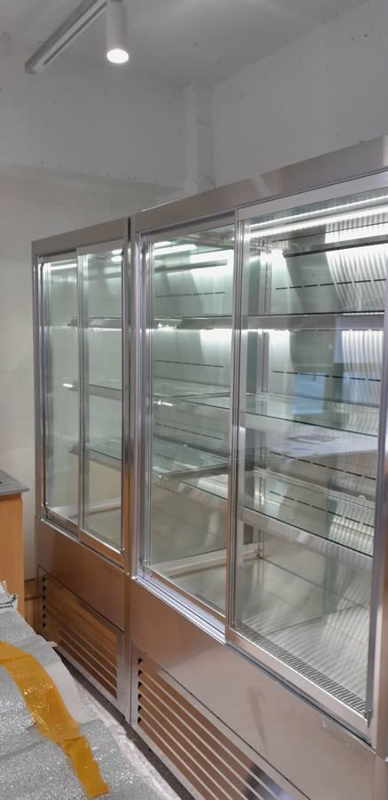
정육숙성고는 주방 안 보관용으로 쓸지, 매장 입구나 홀에서 손님에게 보여 주는 진열용으로 쓸지를 먼저 정하고, 그에 맞춰 위치·크기·조명·도어를 고르는 게 순서입니다. 이 용도가 정해지지 않으면 크기와 사양이 계속 바뀌어 창업 일정과 예산이 함께 흔들립니다.
안녕하세요. 정육점과 정육식당에 들어가는 쇼케이스와 숙성고를 맞춤 제작하는 한성쇼케이스입니다.
숙성육을 내세운 고깃집이나 정육식당을 준비하시는 사장님들은 숙성고를 언제, 어떤 크기로 들여야 할지 고민이 많으십니다.
인테리어 공사가 시작되고 나서야 숙성고 자리를 찾다 보면 전기 배선이나 배수 위치가 맞지 않아 공사를 다시 하는 일도 생기죠.
요즘은 숙성고를 주방 안쪽에만 두지 않고, 손님이 들어오자마자 보이는 곳에 두어 매장의 전문성을 보여 주는 진열 장비로 쓰는 경우가 늘었습니다.
오늘은 정육숙성고를 창업 설비 계획에 넣을 때 먼저 정해야 할 네 가지를 순서대로 짚어 보겠습니다.
1. 보관용인지 보여 주는 용도인지
숙성고를 주방 안에 두면 사장님 작업 동선만 생각하면 됩니다. 외관보다 용량과 선반 구성이 우선이고, 고기를 넣고 꺼내기 편한 문 방향이 중요하죠.
반대로 홀이나 입구에 둔다면 숙성고가 곧 매장의 간판이 됩니다. 손님이 대기하면서 숙성 중인 고기를 바라보게 되니 유리 투명도, 조명 색, 외장 마감이 매장 분위기와 어울려야 합니다.
같은 숙성고라도 용도에 따라 사양이 꽤 달라지니 가장 먼저 정해 두세요.
- 숙성고를 손님이 볼 수 있는 자리에 둘지 정하세요.
- 주방 안이라면 작업대와의 거리를 먼저 재 두세요.
2. 자리와 전기·배수를 인테리어 전에
숙성고는 한 번 자리를 잡으면 옮기기 어렵습니다. 인테리어 도면을 그릴 때 숙성고 위치를 함께 표시해 두면 전용 콘센트, 기계실 열이 빠져나갈 통풍 공간, 제상수 배수 경로를 미리 준비할 수 있습니다.
입구 쪽에 둘 경우 출입문을 열 때마다 바깥 공기가 들어오는 자리는 피하는 편이 좋습니다. 햇빛이 직접 드는 통유리 창 바로 앞도 내부 온도 관리에 부담이 됩니다.
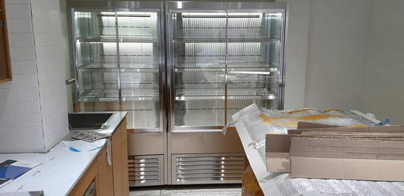
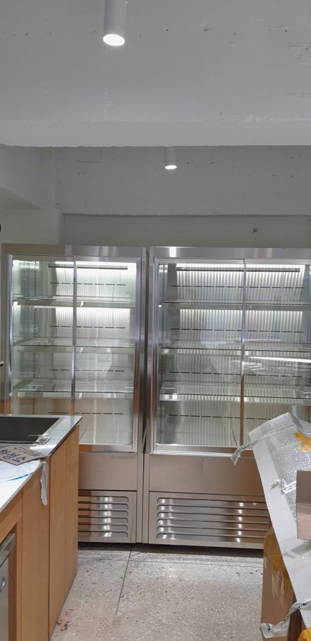
3. 크기와 선반 구성
크기는 한 번에 숙성할 원육 양과 메뉴 회전에 맞춰 정합니다. 처음부터 너무 크게 잡으면 빈 칸이 많아 진열 효과가 떨어지고, 너무 작으면 숙성 일정을 맞추기 어려워집니다.
참고로 홀 진열용으로 제작했던 숙성고 중에는 1200(가로) × 750(폭) × 1900(높이) 규격에 3단 강화유리 선반을 넣은 구성이 있었습니다.
덩어리 고기를 올려도 버틸 수 있는 선반 강도와, 고기 사이로 공기가 도는 간격을 함께 따져 보세요.
4. 조명과 도어, 외장 마감
숙성육은 겉면 색이 일반 생고기와 달라서 조명에 따라 인상이 크게 바뀝니다. 주백색 LED처럼 고기 본래 색이 자연스럽게 보이는 조명을 고르고, 실제 고기를 넣고 비춰 보시길 권해 드립니다.
홀에 두는 숙성고는 유리문에 김이 서리면 고기가 보이지 않으니 결로를 막는 히팅도어를 적용하는 경우가 많습니다.
외장은 위생과 내구성을 생각해 스텐을 많이 쓰고, 정육식당이라면 일반 정육점처럼 너무 붉은 느낌이 나지 않도록 매장 톤에 맞춰 조명과 프레임 색을 조절합니다.
- 실제 고기를 넣고 조명 색을 확인하세요.
- 유리문 결로 방지 방식을 물어보세요.
- 외장 소재와 프레임 색을 매장 톤과 맞추세요.
체크리스트
- 보관용·진열용 용도 결정
- 인테리어 도면에 숙성고 위치 표시
- 전용 전기·통풍·배수 경로
- 숙성 물량에 맞춘 크기와 선반 강도
- 조명 색과 히팅도어 여부
- 외장 소재와 매장 톤
현장에서 자주 보는 경우: 정육점용 쇼케이스를 그대로 들여 식당과 어울리지 않는 정육식당
정육식당 창업 상담에서 자주 듣는 고민이 있습니다. 일반 정육점에서 쓰는 쇼케이스를 그대로 들여놓았더니 조명이 너무 붉거나 식당 분위기와 따로 노는 느낌이 난다는 것이죠.
손님은 쇼케이스에 진열된 고기로 신선도를 판단하는데, 쇼케이스가 매장 디자인을 해치면 다시 오고 싶은 마음도 줄어듭니다.
이런 매장에는 디자이너가 인테리어와 동선을 보고 설계해 크기, 색상, 조명 톤까지 맞춥니다. 고기 색이 살아나도록 LED 조명 각도를 조절하고, 결로 방지와 디지털 온도 컨트롤러로 냉기를 고르게 유지하며, 설치하자마자 쓸 수 있는 완제품 형태로 배송합니다.
출고 전 119가지 품질 테스트를 거치고, 이후에는 전국 240여 개 A/S 센터가 관리를 맡습니다.
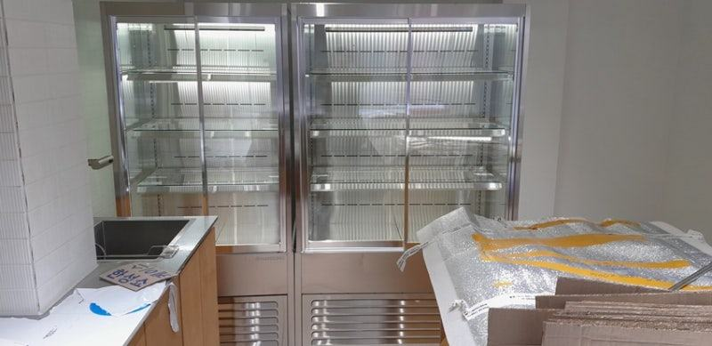
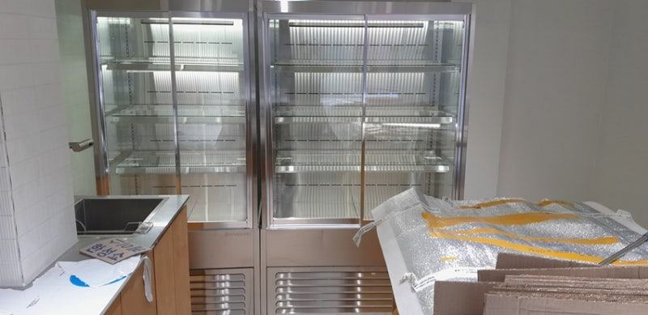
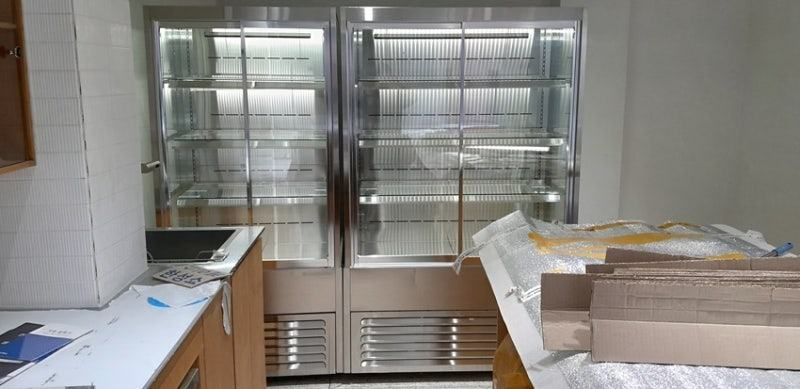
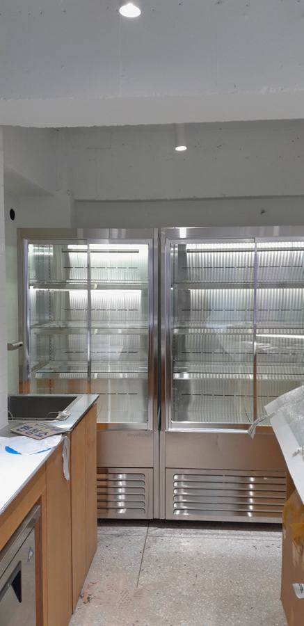
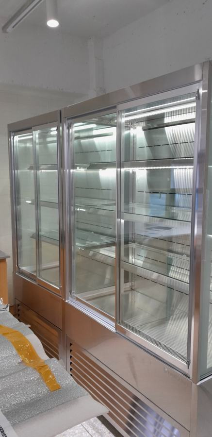
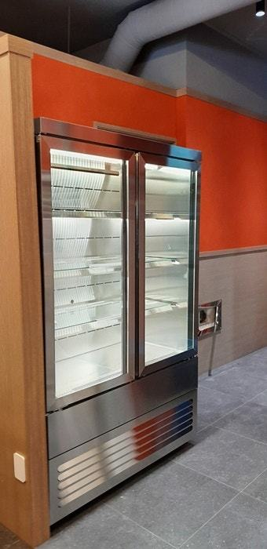
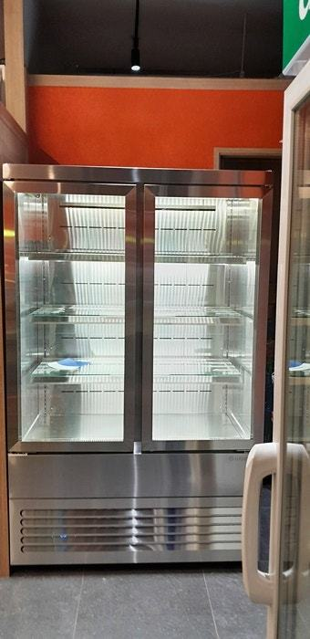
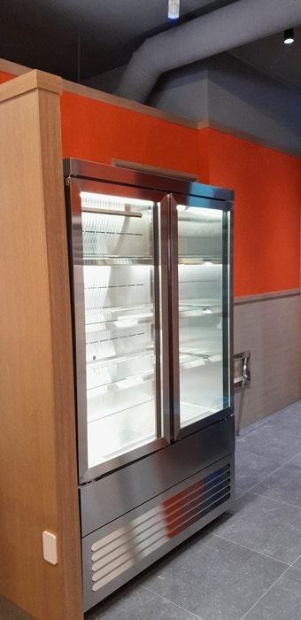


자주 묻는 질문
숙성고는 언제 주문하는 게 좋을까요?
인테리어 도면을 그리는 단계에서 상담을 시작하시는 게 좋습니다. 맞춤 제작은 설계와 제작 기간이 필요하니 오픈 일정에 여유를 두고 문의해 주세요.
숙성고와 정육쇼케이스를 하나로 합칠 수 있나요?
매장 규모와 판매 방식에 따라 숙성 칸과 진열 칸을 함께 구성하는 방법도 있습니다. 숙성 물량과 판매 부위를 알려 주시면 가능한 구성을 안내해 드립니다.
숙성고 적정 온도는 몇 도로 맞추나요?
숙성 방식과 고기 종류에 따라 다르기 때문에 한 가지 숫자로 정하기 어렵습니다. 운영하실 숙성 방식을 기준으로 설정 범위를 함께 상의해 드립니다.
매장 조건에 맞춰 만드는 한성쇼케이스
원하시는 제품 사진과 설치할 공간 사진만 보내 주셔도 매장에 맞는 구성을 추천해 드립니다.
- 전국 240여 개 A/S 전담 센터 운영
- 본사 대량 자재 매입으로 품질 대비 합리적인 가격
- 유럽제·삼성 냉각 콤프레셔 적용
- 국내 최초 쇼케이스 전문 디자이너 상주
매장 폭과 원하는 진열 구성을 알려 주세요. 실측과 견적을 안내해 드립니다.
031-986-2458